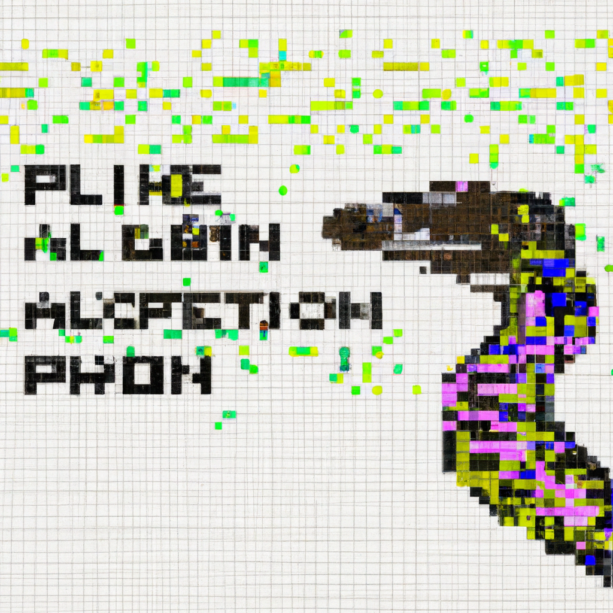

The future of Python and AI
In the recent years, Python has become an incredibly popular language for coding AI-based applications. It is easy to learn, and its powerful libraries and frameworks make it a great choice for developers who are looking to create AI-powered projects. One of the main advantages of using Python is that it can be used to develop applications that use Open AI’s API. Open AI is the world’s first artificial intelligence platform, and its API allows developers to create applications with pre-trained machine learning models that are ready to be used in production environments.
With Open AI, developers can create applications that can interpret speech, understand natural language processing, detect objects, and more. This makes it a great choice for developers who want to create sophisticated AI-powered applications quickly and easily.
Open AI also has tools available for developers who want to build custom models from scratch. This allows them to leverage the power of machine learning algorithms without having to spend time building the model from scratch. With these tools, developers can create powerful models that can be used in production environments and deployed on a variety of platforms such as mobile phones, tablets, and home devices.
The potential for Python and AI is vast and exciting. As more companies begin investing in this technology, we will see even more applications being created with Python that take advantage of Open AI’s powerful APIs and models. The combination of Python’s ease of use and Open AI’s powerful tools make it an incredibly powerful platform for creating sophisticated AI-powered applications quickly and easily.